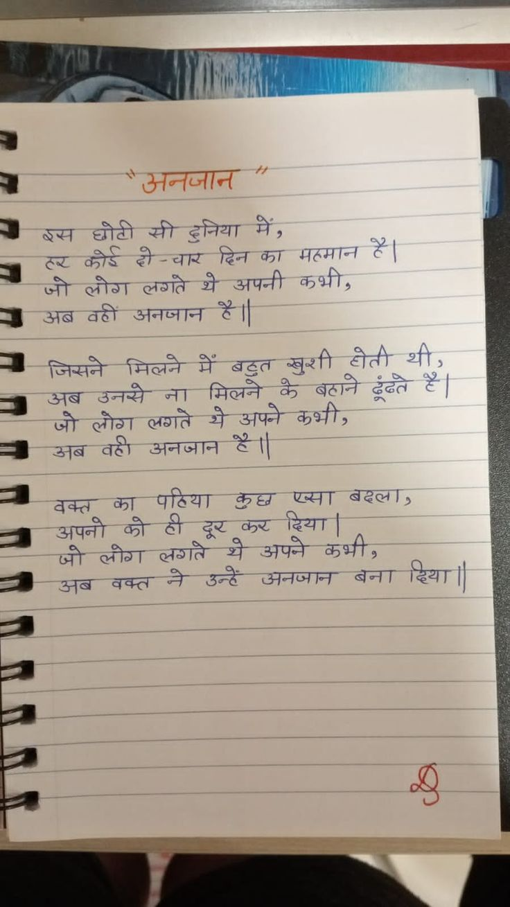

File: hin_sample_17.jpg

|| LAA ‘ ps 2 2 ee (| a Bo छोवी सी दुनिया में; ¥ 3 =< ee Sa दिन का मठमान दें | जो लौणा लणते औ अपनी Halt, os a8 अनजान FI 3 जसने मिलने में बठ॒त खुशी ady थी; = उतब उनसे ना मिलने के बहाने dea =| Ss tot लणते ay सपने कप्मी; a वही उनजान S| a. का Ra ee ST बढ़ता; S ag उपनी को ठी दूर कर err | हा ज्वी_ लीगा लणते ओऔ ऊपने att; : 9 उतन॒ब वक्त नी उन्हें ऊनजाना बना ड्थिः ॥ Pe कु " न् = - =— == == a हे =
he गति कतार in al Ci a eu ae) VA i He BT oy 2 BR 85 ॥॥॥॥ HA eee Na a ie कब “777777:777----:<र Hae व न 7 oe | Wo rc 7-7 मु तय es Leet oak ee ee तल - aga SST दें meats of rar. ie Beet ere Sf : 25) ee weet | oo. my teat Rs Boh IK आदर 2A. He Seth et ert Se Se ee की न 7“ aera ai het बहाने ger ET : aa की Seta दि ee 9६०० --->..->तमतन्7् पा ee as a et oe —— are me वक्ता St eT जन aT a a en eae ann inn डा TO : ‘ a , Canna «or तय 7 तय दि भा: ।उैि दिेएढ तप निनताा न तिल न पतन ढ
अनजान में , छोटी सी डनिया इस दिन का थे अपनी है|| - वही अनजान अब मिलने जिसने बढ्त बढाने मिलने उनसे - अब लोग लगते = अनजान अब = बढला , पढिया एसा कुछ का वक्त दिया | ही अपनी को कर = दूर थे अपने कभी , दिया | उन्हें बना अनजन वक्त अब
❌ OCR Failed
आंधुत्र
येउतनजा॑न बूखन छीटी सी हुनिया में। ठब्ट कोर्ट ही-चार हिन ब मतमाज हैं। जी लोग लरांते थैअपनी कुभी अब वठीं अनजान हैंग जिखने मिलने मैँ बहुत खुशी टेतीथी अनब उनखे ज। मिजर्न कै बटाने दूँधते ड जी लोग लराते थैअपने कुभी हैं। अनब वटी अनजान हैंग बक्त् क पटिया कुछ पुजना बदिख्त अपनी को टी दूर कुष्ट दिया जी लोीरा लराते थे अपने कुंभीर अब बवल ने-उन्टें अनजान बना हिया।
अनजान रव छोटी ग दविया में मत्मान ह। ट कोग ही त चार दिनका गिन का कभी जो लोना लरांते भ अपनी अब वटीं अनजान कँग जिमने मिलने ग बढ़त खशी होती थी अब उनसे जा मिलने ग बटाने ढूंबते टँ जॉ लोग लशते भ अपने कुभी अब बटी अनजान रँग वक्त व पटिया कु दिया पमा बढल अपनी ब टी श ग क अपने कुंभी जॉ लोग लशते उन्टे अनजान बना हियाप अब वक्त न